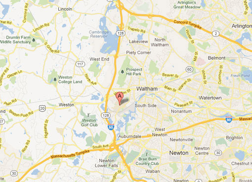

<section class="mapSection grid-80 nonFloat sectionMod ">
  <h2>Find the best neighborhood for your night. </h2>
  <select>
    <option value="capitolHill">Capitol Hill</option>
    <option value="ballard">Ballard</option>
    <option value="uDistrict">University District</option>
    <option value="fremont">Fremont</option>
    <option value="belltown">Belltown</option>
  </select>
  <select>
    <option value="male">Male</option>
    <option value="female">Female</option>
  </select>
  <div class="map">
    
  </div>>
<a href="#/pictures/capitolhill/true">
  <button class="grid-20 nonFloat">See Who's Around</button></a>
<a href="#/messages/capitolhill/true"> <button class="grid-20 nonFloat">Post a Message</button></a>
Lat  : {{location.lat}}
Long : {{location.long}}
</section>
